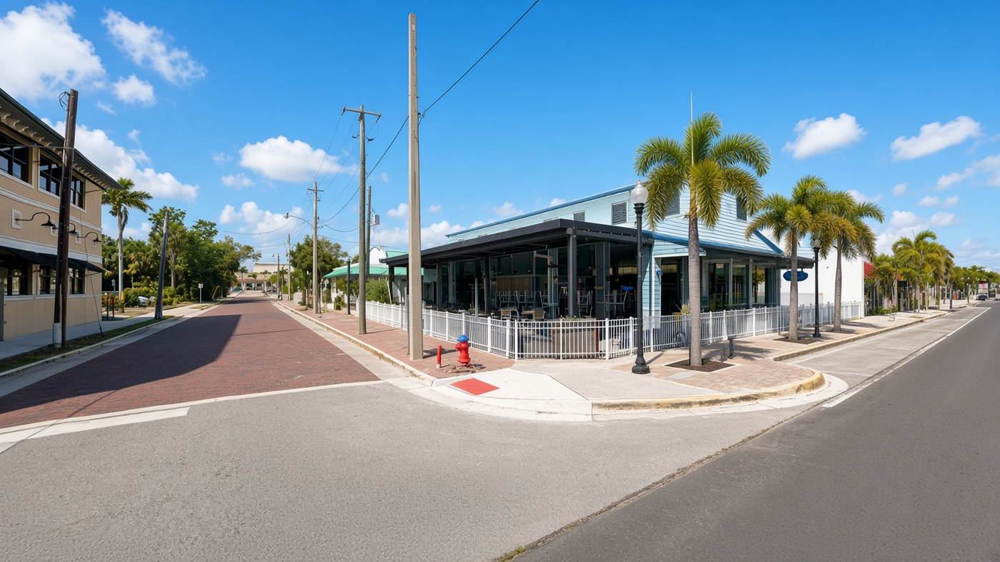

Draft preview for review. Not published. Images shown from local copies.
Charlotte County Homestead Exemption

Charlotte County, FL · Property taxes
The homestead exemption is the single biggest property-tax break most Florida homeowners will ever get, and it has a hard deadline: March 1.
It also just changed. On November 3, 2026, Florida voters approved Amendment 3, which raises the exemption sharply starting in 2027, and treats people who move here after 2026 differently from people who are already residents.
If you are buying in Charlotte County this winter, or you just closed, here is what to file, when, and what the new rules mean for you. This is general information from public sources, not tax or legal advice.
The short version
Own it and live in it on January 1. Then file with the Charlotte County Property Appraiser by March 1.
2026 amount: up to $50,000. $25,000 off all taxes, plus $25,000 more on value from $50,000 to $75,000, school taxes excluded.
Amendment 3 raises it in 2027. Non-school taxes: up to $150,000 of assessed value in 2027 and $250,000 in 2028, then indexed to inflation.
New arrivals wait. Under the amendment, people who are not Florida residents by December 31, 2026 start at the old amounts and qualify for the increase in their fifth year of exemption.
In this guide
01What the exemption is2026 amounts02What Amendment 3 changes2027 and 202803Who qualifiesJanuary 1 rule04How to file in Charlotte County4 steps05Save Our Homes and portabilityThe cap06Other exemptionsSeniors and more07Second homes and rentalsNo homestead08FAQs7 answersPart 01
What the Charlotte County homestead exemption is
Two parts today, both handled by the Property Appraiser.
The homestead exemption reduces the assessed value of your permanent Florida residence before property taxes are calculated. For 2026 it is up to $50,000: the first $25,000 applies to all property taxes, and an additional $25,000 applies to assessed value between $50,000 and $75,000 for all taxes except school taxes. You must own and live in the home on January 1 and file by March 1.
Two details surprise buyers. First, the exemption is not automatic when you buy. The seller's exemption goes away after a sale, and you have to apply in your own name. Second, getting homestead also turns on Save Our Homes, the cap that limits how fast your assessed value can rise in later years. Over a long ownership, that cap can be worth as much as the exemption itself, or more.
$25,000
off all property taxes, including school taxes
+$25,000
on value from $50,000 to $75,000, non-school taxes only
Jan 1
the date you must own and live in the home
Mar 1
the filing deadline with the Property Appraiser
Source: Charlotte County Property Appraiser, Exemptions; Florida Department of Revenue, property tax exemptions.
Part 02
What Amendment 3 changes, starting in 2027
The biggest change to homestead in decades.
Amendment 3 was approved on November 3, 2026 with 61.98 percent of the statewide vote. Starting with the 2027 tax roll, it raises the homestead exemption for non-school taxes to up to $150,000 of assessed value, then up to $250,000 in 2028, adjusted for inflation after that. It also cuts the yearly assessment cap on non-homestead property from 10 percent to 5 percent.
Nov 3, 2026
Florida voters approve Amendment 3 (House Joint Resolution 1-F), 4,922,977 yes to 3,020,085 no. Constitutional amendments need 60 percent.
Dec 31, 2026
The residency date in the amendment. People who are not Florida residents as of this date start at the existing exemption amounts when they qualify.
Jan 1, 2027
The amendment takes effect and first applies to the 2027 tax roll. This is also the date you must own and occupy the home for a 2027 exemption.
Mar 1, 2027
Filing deadline for a 2027 homestead exemption in Charlotte County.
2028
The non-school exemption rises to up to $250,000 of assessed value, then adjusts for inflation in later years.
Source: Florida Division of Elections, 2026 amendment results; Florida Department of Revenue, bulletin PTO 26-21 on Amendment 3; Florida Legislature, HJR 1-F enrolled text.
Three things in the amendment matter most to buyers:
Existing owners
A larger non-school exemption
If you already have homestead in Florida, the exemption for non-school taxes rises to up to $150,000 of assessed value in 2027 and $250,000 in 2028. School taxes keep the $25,000 exemption.
Watch for
Your 2027 TRIM notice in August
New residents
A five-year wait for the increase
According to the Department of Revenue, people who are not Florida residents as of December 31, 2026 get a $25,000 school-tax exemption and up to $50,000 for non-school taxes when they qualify, with the increased exemption starting in their fifth year of exemption.
Ask
The Property Appraiser about your residency date
Second homes
A lower cap on increases
Non-homestead property, such as second homes, rentals, and vacant land, sees its yearly assessment cap fall from 10 percent to 5 percent. That cap has never applied to school taxes.
Applies to
Property without homestead
What I tell customers right now
If you are moving to Charlotte County, the December 31, 2026 residency date is worth a conversation before you plan your move. Becoming a Florida resident is a legal question with several parts, so talk with the Property Appraiser's office and a Florida attorney or tax adviser about your own facts. The amendment directs the Legislature to set uniform procedures for the new-resident rule, and the Department of Revenue says it will publish more guidance and form updates as the amendment is put in place, so some details are still being settled.
Part 03
Who qualifies, and what to bring
Ownership, residence, and proof, all as of January 1.
You qualify if you hold legal or equitable title to the home, live in it as your permanent residence, and are a legal resident of Florida on January 1. Your deed must be recorded in Charlotte County before the exemption can be granted, and you and your spouse must provide Social Security numbers.
The Charlotte County Property Appraiser suggests these as proof of Florida residency. Have them ready before you file:
Recorded deed or tax bill
Your recorded deed, or your most recent paid tax bill with the parcel number. Florida law requires the deed to be recorded in Charlotte County's official records before homestead can be granted.
Tip
Closing agents record the deed
Check
The parcel number on the record
Florida driver license and vehicle registration
A Florida driver license (a Valid in Florida Only license is not accepted) and Florida registration for all vehicles. The state also requires new residents to get a Florida license within 30 days of establishing residency and to register vehicles within 10 days. See the FLHSMV new resident guide.
Where
Charlotte County Tax Collector
Timing
30 days for a license
Voter registration or Declaration of Domicile
Voter registration, or, if you are not a U.S. citizen or prefer not to register, a Declaration of Domicile filed with the Clerk of the Circuit Court for a small recording charge.
Where
Supervisor of Elections or Clerk of Court
Both owners
If married, both spouses
Other documents if they apply
A permanent resident card (front and back) if you are not a U.S. citizen; the trust agreement or an Affidavit as to Terms of Trust if the home is held in trust; and the real property decal and registration for a mobile home.
Source: Charlotte County Property Appraiser, Exemptions; Florida Department of Highway Safety and Motor Vehicles, new residents.

Historic downtown Punta Gorda, a few blocks from our Cross Street office.
Part 04
How to file in Charlotte County
Online or by mail, by March 1.
File with the Charlotte County Property Appraiser, either online or by mail, after you own the home and by March 1 of the year you want the exemption. If you are moving a Save Our Homes benefit from another Florida homestead, file Form DR-501T with your application. If you miss March 1, call the Property Appraiser right away to ask about your options.
Close and record
Your title company records the deed after closing. Confirm it shows on the Property Appraiser's parcel record.
When
At closing
Become a resident and move in
Update your driver license, vehicle registration, and voter registration, and make the home your permanent residence by January 1.
Deadline
January 1
Apply
Use the online homestead application or the mail application on the Property Appraiser exemptions page. Add the portability form DR-501T if you are leaving another Florida homestead.
Deadline
March 1
Check your notice
Each August, the Truth in Millage (TRIM) notice shows your exemptions and assessed value. Make sure homestead appears.
When
August
Giving false information to claim homestead is a misdemeanor under section 196.131, Florida Statutes, according to the Property Appraiser.
Part 05
Save Our Homes and portability
The cap that grows more valuable every year you stay.
Save Our Homes limits yearly increases in a homestead's assessed value to 3 percent or the change in the Consumer Price Index, whichever is lower, starting the year after the exemption is granted. For 2026 the cap is 2.7 percent. Portability lets you move all or part of that built-up benefit to a new Florida homestead within three years of January 1 of the year you left the old one.
| Tax year | Change in CPI | Cap applied |
|---|---|---|
| 2026 | 2.7% | 2.7% |
| 2025 | 2.9% | 2.9% |
| 2024 | 3.4% | 3.0% |
| 2023 | 6.5% | 3.0% |
| 2022 | 7.0% | 3.0% |
Source: Florida Department of Revenue, Save Our Homes.
Two rules catch people. A sale or other change of ownership resets the assessed value to market value on the following January 1, with some exceptions such as transfers between spouses. And portability is counted from January 1 of the year you abandoned the old homestead, not from the sale date.
Source: Florida Department of Revenue, Save Our Homes and Portability Transfer (PT-112).
Part 06
Other exemptions in Charlotte County
Worth asking about if any apply to you.
Charlotte County offers an additional senior exemption of up to $50,000 for homeowners 65 and older with limited household income, applying only to taxes levied by Charlotte County. Widows and widowers and people with a qualifying disability can each claim a $5,000 exemption. Veterans and active-duty service members have separate benefits under state law.
| Exemption | Amount | Key rules |
|---|---|---|
| Senior, limited income | Up to $50,000 | Age 65 or older on January 1, current homestead, household income under the yearly limit. County taxes only. Apply January 1 to March 1 with Form DR-501SC. |
| Widow or widower | $5,000 | Permanent Florida resident. Ends if you remarry. |
| Disability | $5,000 | Proof of total and permanent disability from the sources the Property Appraiser lists. |
| Veterans and military | Varies | Several state benefits exist. See the Department of Revenue guide for veterans and active-duty members. |
Source: Charlotte County Property Appraiser, Exemptions; Florida Department of Revenue, exemptions and taxpayer guides.
Part 07
Second homes, snowbirds, and rentals
Homestead is only for one home: the one you live in.
A second home, seasonal home, or rental cannot get the homestead exemption. Instead, non-homestead property has its yearly assessment increase capped at 10 percent, for all taxes except school taxes. Under Amendment 3 that cap falls to 5 percent starting in 2027. The cap resets when the property is sold.
If you own here part of the year and are deciding whether Punta Gorda becomes your permanent home, read Is Punta Gorda a good place to live?, and if you are shopping condos as a seasonal base, our condo buyer checklist covers association documents and insurance. For the full move, from license to utilities, start with our Moving to Punta Gorda relocation guide.
Source: Charlotte County Property Appraiser, 10% cap for non-homestead property; Florida Department of Revenue, PTO 26-21.
Part 08
Homestead questions, answered
What is the deadline for the homestead exemption in Charlotte County?
March 1. You must own the home and live in it as your permanent residence on January 1, then file with the Charlotte County Property Appraiser by March 1 of that year.
How much is the homestead exemption in Charlotte County?
For 2026 it is up to $50,000 of assessed value: $25,000 off all property taxes, plus an additional $25,000 on assessed value between $50,000 and $75,000 that does not apply to school taxes. Amendment 3 raises the non-school portion starting in 2027.
What does Florida Amendment 3 change?
Approved by voters on November 3, 2026, it raises the homestead exemption for non-school taxes to up to $150,000 of assessed value in 2027 and $250,000 in 2028, then adjusts it for inflation. It also lowers the yearly assessment cap on non-homestead property from 10 percent to 5 percent. It takes effect January 1, 2027.
I am moving to Florida in 2027. Do I get the bigger exemption?
Not right away, according to the Florida Department of Revenue. People who are not Florida residents as of December 31, 2026 receive the existing exemption amounts when they qualify, and become eligible for the increased exemption beginning with their fifth year of exemption. Residency is a legal question, so confirm your situation with the Property Appraiser.
What is the Save Our Homes cap for 2026?
2.7 percent. Save Our Homes limits yearly increases in a homestead's assessed value to 3 percent or the change in the Consumer Price Index, whichever is lower, starting the year after the exemption is granted.
Can I bring my Save Our Homes savings from another Florida home?
Often, yes. Portability lets you transfer all or part of the assessment difference if you establish the new homestead within three years of January 1 of the year you left the old one. File Form DR-501T with your homestead application by March 1.
Can I get a homestead exemption on a second home or rental?
No. Homestead applies only to your permanent residence. Non-homestead property instead gets an assessment cap, now 10 percent a year and 5 percent under Amendment 3, which does not apply to school taxes.
Related Reading
Browse current homes on our properties page or estimate a payment with our mortgage calculator.
Also: Port Charlotte real estate by the numbers · Should I rent or buy a home? · How we work with buyers
Buying before January 1?
We can help you time a closing, line up the paperwork, and point you to the right county offices. Call or text The Helgemo Team at (941) 770-2275.
The office is at 320 Cross Street, Punta Gorda, Florida 33950. You can also meet Brian Helgemo or read more about the team.
Sources: Charlotte County Property Appraiser, Exemptions; Charlotte County Property Appraiser, online homestead application; Florida Department of Revenue, Property Tax Oversight Bulletin PTO 26-21, Constitutional Amendment 3, November 5, 2026; Florida Division of Elections, constitutional amendment results, November 3, 2026 general election; Florida Legislature, CS/HJR 1-F (2026F), enrolled text; Florida Department of Revenue, Save Our Homes annual increase table, revised January 2026; Florida Department of Revenue, Save Our Homes Assessment Limitation and Portability Transfer (PT-112); Florida Department of Revenue, Property Tax Exemptions and Additional Benefits; Florida Department of Highway Safety and Motor Vehicles, New Resident. This article is general information, not legal or tax advice. Rules and amounts can change; confirm your situation with the Charlotte County Property Appraiser.